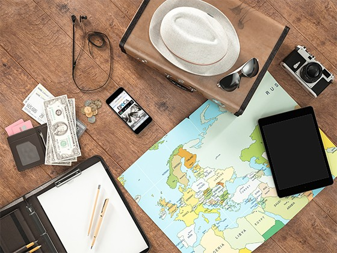
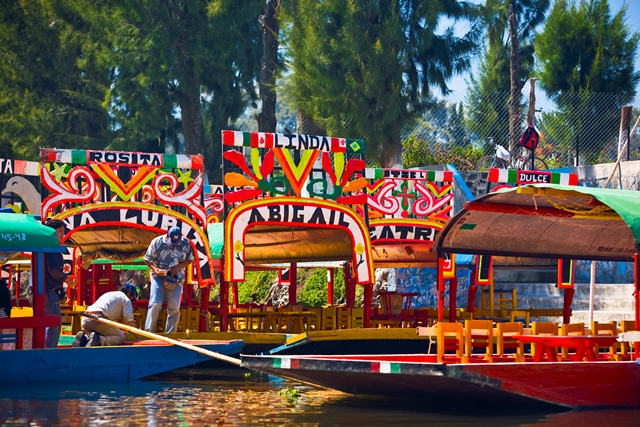

Elige tu destino
Ya sea que viajes dentro o fuera de México, siempre hay destinos particularmente caros o que
suben o bajan de precio según la temporada.

Haz un itinerario y determina un presupuesto aproximado para tu viaje.
Todos los expertos en viajes recomiendan crear un itinerario. Gracias a este paso,
no solo
aprovecharás al máximo el tiempo en el destino, sino que también podrás definir cuánto
gastarás
aproximadamente en tus vacaciones.
Hay varios elementos básicos que debes tener en cuenta:
Avión
Hotel
Transporte
Comidas
Atracciones turísticas y entretenimiento
Otros gastos (seguro de viaje, visa, souvenirs, etc.)

Investiga qué es lo que quieres visitar en tu destino (museos, obras de teatro,
restaurantes,
parques públicos, miradores…) y planea día a día las actividades por zonas. Definir los
lugares
de interés cercanos entre sí y dedicar cada día a un área concreta nos ayuda a ahorrar
en
transporte en urbes muy grandes, como Nueva York, Londres o Ciudad de México.
Busca las mejores opciones para gastar menos
No hace falta averiguar el hotel y el vuelo más baratos aerolínea por aerolínea,
hotel
por hotel ni agencia por agencia. Para encontrar todo en un mismo sitio, simplemente usa
TRAVELERS, que tiene muchos lugares, en los que podrás visualizar todas las promociones
y
opciones de hospedaje en un solo lugar y así ahorrar tiempo y dinero.
Siempre existen trucos en los que no todo el mundo repara. Por ejemplo, los
hoteles más
baratos suelen estar en los barrios residenciales y, además, al salir de las zonas súper
turísticas, la relación calidad-precio mejora considerablemente. Si viajas en fin de
semana a una gran ciudad, otro tip muy útil y desconocido es buscar hospedaje en el
distrito financiero, ya que los hoteles bajan sus tarifas al tener mayor ocupación entre
semana.
Lleva un dinero extra para cualquier imprevisto
A pesar de haber planeado perfectamente el presupuesto de un viaje, una vez en el
destino, puede ocurrir cualquier contratiempo, desde que el tipo de cambio suba hasta un
accidente, por lo que es importante tener reservado un dinero extra para poder responder
ante estas situaciones.
Haz una bitácora de tus gastos
Quizás en tu viaje pases tu tarjeta más de lo que pensabas o no calcules muy bien el
tipo de cambio. Y cuando regresas a casa y recibes en tu estado de cuenta una cantidad
de dinero mayor a la que esperabas, te preguntas cómo habrá podido pasar. Para evitarlo,
apunta todos los pagos que vas haciendo en el día para ser más consciente de lo que
gastas y en qué lo haces. De esta manera, podrás administrarte mejor durante el viaje y
no recibir sorpresas financieras poco gratas a tu regreso.